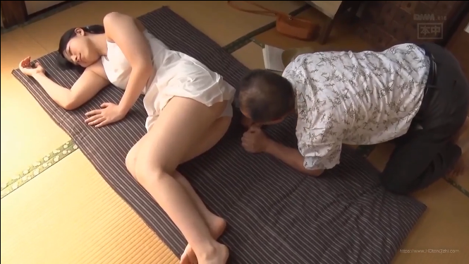

Cháu Diểm mồ coi từ nhỏ. Ba nó mất hồi nó lọt lòng, đến năm lớp 7 thì má nó mất trong một tai nạn giao thông. Bên nội nó bắt về nuôi mấy năm hổng biết sao sau đó nó về thăm ngoại rồi ở luôn không chịu về nội nữa.
Từ ngày có con Diểm về ở, cậu Đạt bớt đi chơi. Cậu Đạt năm nay gần 30 mà chưa lấy vợ. Cậu kén chọn hoài chưa chịu đám nào. Tính cậu kỉ không dám bó buộc với người mà cậu chưa biết kỉ càng. Bà ngoại cứ cằn nhằn nhưng cậu vẩn chờ hoài vì chưa gặp được người như ý.

Cháu Diểm năm nay 16 tuổi học lớp 10 thân hình cân đối tròn trịa. Ngực vun, eo thon còn bên dưới thì…đầy đặng trông rất hấp dẩn. Tuổi nầy thường các em chưa nẩy nở hết nhưng không biết sao cháu Diểm lại có cái thân hình cân dối như thế. Khuôn mặt ngây thơ nhưng thân thể không ngây thơ chút nào. Tóc cháu đen tuyền dài chấm vai, làn da trắng hồng không một vết mụn hay tàn nhan, mắt Diểm to trong rất ngây thơ. Từ cổ trở xuống Diểm khác xa với các em cùng tuổi: Vai Diểm tròn, ngực vun cao nẩy nở. Cái eo ôm sát trong chiếc áo eo làm nổi bật bờ mông no tròn săn chắc của tuổi dậy thì.
Cháu ăn chưa no lo chưa kỉ nên chuyện gi cậu Đạt cũng phải chỉ bảo chừng chừng. Nhà ngoại các cậu các dì đều yên bề gia tất ra riêng cả chỉ còn cậu Đạt lo cho bà ngoại nay có Diểm về cũng vui nhà vui cửa.
Cuộc sống gia đình cứ thế êm đềm trôi qua nếu không xảy ra sự cố mà đến giờ nầy cậu Đạt nhắc lại hảy còn bồi hồi xúc động.
Hôm ấy trời mưa nhà dột cậu Đạt leo lên trần tìm cách sửa lại mấy miếng ngói bị tuột. Đang loay hoai trên trần tối thui cậu chợt nghe tiếng mở cửa. Quáy! giờ nầy bà ngoại còn ngoài tiệm vài, cháu Diểm ở trường ai mở cử cơ chứ? Nghĩ là ăn trộm Đạt nhè nhẹ bò lại khe hở dòm… Đạt xém kêu lên, tim Đạt đập thình thịch vì dưới kia là Diểm, không phải Diểm thường ngày mà là Diểm ướt như chuộc lột đang tỉnh bơ tuột từng mảnh vải trên người. Đạt tính làm bộ gây tiếng động để cháu hay trong nhà có người nhưng không biết tại sao cổ họng cậu lại khô quá hay cậu cố ý làm thinh?
Diểm vừa vuột ra khỏi cái áo đồng phục đi học cậu Đạt không còn muốn lên tiếng nữa. Đến nịt vú rơi xuống giải thoát đồi hoan rờn rợn no tròn vun cao vút. Hai vú Diểm trắng phau to tròn, hai núm vú nhỏ màu hồng nhạt chưa một lần có ai động đến. Diểm vắt áo lên thành giường rồi khôm người tuột luôn váy ra chỉ còn cái quần lót màu trắng ướt sủng dáng sát vô da làm u lên cái mu lồn ú nu có màu đen đen bên dưới. Hai mông rắn chắc cong cớn làm Đạt phải giật mình. Con cu anh cứng ngắc tự hồi nào không biết. Khi Diểm lột nốt mảnh vải cuối cùng trên người xuống cậu đạt đã trở thành người khác. Hai mắt cậu dáng sát vào cái mu lồn cồm cộm của cháu Diểm. Cai mu to như sưng lên chỉ mới có lông thưa mỏng che không hết hai mếp nở hé lồ lộ cái khe hồng hồng quyến rủ.
Diểm lấy khăn lau người cho khô rồi xoai tới xoai lui, chổng lên, chổng xuống lục lạo tìm quần áo trong tủ. Trên trầm cậu Đạt thi đang cho tay vào quần móc cu ra xụt lấy xụt để, hai mắt không rời cái thân thể trần truồng của cháu Diểm. Cậu địa hết vú đến đít xuống cái lồn to ngon như múi mít. Khi cậu sướng trân người khí phụt bắng tung toé trên trần nhà mà cháu Diểm nào có hay biết gì đâu.!
Sau hôm ấy cậu Đạt nhìn Diểm với ánh mắt khác xưa. Hình như Diễm cũng nhận ra nhưng không biết tại sao nữa !
Đêm đến Đạt khó ngủ vì cứ nghĩ đến cháu. Con cặc cứ cứng lên hoài Đạt mân mê thủ dâm hàng đêm va hình ảnh cháu Diẽm luôn là đối tượng trong cơn khoái lạc tội lổi nầy.
Hôm nay trăng gần rằm cảnh vật lung linh hư ảo quanh vườn Đạt càn khó chịu không ngủ được. Đi quanh quẩn quanh vườn chân Đạt tự dưng dẩn đến cửa sổ phòng Diễm. Tim anh hồi hộp khi thấy đèn trong phòng còn sáng. Cậu rón rén lại gần dồm qua song cửa. Trong phòng Diểm đang đọc sách. Diễm nằm duổi đôi chân dài thoải mái đầu trên gối tóc xoả dài hai tay ôm cuốn sách mỏng say sưa đọc. Đạt đứng nhìn say sưa mắt không rời những nơi hiểm hóc tren người đứa cháu ngây thơ. Dưới lớp áo ngủ mỏng tanh màu hồng nhạt che không hết đồi núi chập chùng tên người Diễm càng hấp dẩn. Hái vú bầu tròn đầy vun như bức tranh vệ nữ, giửa háng là cái mu đầy đặng no tòn như thách đố mời mọc.
Đang say sưa lục lọi bằng ánh mắt nổ lửa trên tấm thân trinh nữ cháu Diễm chợt đánh bộp cuốn sách vuột tay rơi xuống đất. Diễm vẩn nằm yên hơ thở đều đều… Cháu đã say giất điệp đến rơi cả sách mà cũng chẳng hay. Một ý nghĩ chợt loé lên Đạt hít một hơi dài nhè nhẹ rời cửa sổ, cậu trở vô nhà đi nganh phòng mẹ nghe ngóng. Sau một ngày buôn bán ngoài chơ mẹ cậu nghủ say như chết. Tiếng ngáy lớn như đàn ông làm Đạt yên tâm đi thẳng lên phòng cháu Diễm.
Đạt nhẹ nhàng như thằng ăn trộm lẻn nhanh vô phòng khép cửa lại. Cậu đến bên giường cháu nhìn thân đầy đặng nằm phơi ra dưới anh đèn đọc sách. Toàn bộ toà thiên nhiên như mời mọc cậu. Cậu biết như vầy là không phải với mẹ với chị và với cháu Diễm nhưng không cưỡng được. Lòng cậu như mê mụi, máu chạy rần rật trong cơ thể, con lơn lòng không còn biết phải quấy gì nữa.
Quì xuống sàn lết lại gần hơn Đạt để tay lên ngực Diễm…Ôi! đê mê làm sao. Cậu tuy đã từng truy hoan với mấy em mary sến trong xóm nhưng không em nào còn trong trắng và tròn trịa hấp dẩn như Diễm. Mấy cô ấy phần đông cở cậu hoặc lớn hơn nên cũng hơi chán. Cậu luôn ao ước một tấm thân trinh bạch tràn đầy sinh lực và…đầy đặng như thế nầy!
Đạt vuốt qua vuốt lại hai gò hồng đảo căng cứng. Hai tay ôm lấy hai vú mân mê chán chê mà Diễm vẩn không hay. Bây giờ thi không dừng lại được như ý định ban dầu. Cậu vuốt lần xuống bụng, xuống nữa.. tay cậu càng tiến về phía dưới, tim cậu càng đập mạnh hơn. Đến cái mu cao cao lòng cậu rộn rả sướng khôn tả xiết. Bàn tay tiếp tục thao túng trên cái mu lồn trinh nguyên ấy. Đạt từ từ kéo cái váy ngủ Diễm lên. Hai đùi bày ra trườc mắt rồi …cao thêm..cái háng cũng hiện ra. Đám lông lồn mới mọc như cỏ non trên đồi phơi phới. Cả cái lồn to, hai mép sưng hum húp bày ra như mời như thúc cậu Đạt. Tiếp tục kéo váy lên đến cổ để thấy hết tâm thân trinh bạch Đạt như không còn sợ cháu thức nữa.
Cậu ve vuốt tâm thân ngà ngọc chán che bèn banh hai giò cháu ra vục đàu vào giửa háng. Nằm dài giửa hai chân Diễm dang rộng chống hai tay xuống giường Đạt cúi xuống cái lồn thơm phức…Cậu le lưỡi liếm mép bên nầy đến mép bên kia rồi lách lưỡi vào giửa khe. Mùi hăng hắc và hơi nóng từ lồn cháu thoát ra làm cậu nghi ngờ. Để kiểm chứng Đạt dùng hai tay vạch hai mép lồn cháu ra liếm từ dưới lổ đít cháu liếm lên. Đến cái lổ bé tí cậu dừng lại giây lát rồi ấn đầu lưỡi cố chui vào cữa mình cháu. Hai chân Diễm như cong lại chống xuống giường để rướng người lên. Đạt ngoái lưỡi vào ngay mông đốc rồi lơi dần lơi dần ra xa bất chợt Diễm hẩy lồn lên cao như sợ lưỡi cậu thụt vào mât . Đạt cười thầm thấp đầu xuống, hai tay ôm lấy bờ mông no tròn của Diễm miết mồm vào hột le bú mạnh.
– Ư…Ư ôi!
Không ai nói một lời đạt nhanh tay tuột cái áo thun và quần đùi nhanh chóng trường lên ngang tầm hai cánh tay vạm vở ôm lấy tấm thân trinh bạch căn cứng. Hai đầu gối quì giửa háng cháu con cặc cương hết cở chỉa thẳng vô lồn Diễm. Đến miệng lồn cậu bắt đầu nhấp nhè nhẹ. Lồn cháu Diễm nhoè nhẹp dâm khí cặc cậu Đạt vươn dài từ từ chui vào. Hai hơi thở dồn dập quyện vào nhau dướt đoạn. Đạt rướng người thêm nữa, thêm nữa..cợt : ” phư…c”
– A..A đau ư….ui!
Đạt dừng ngay cúi xuống bú liếm hai vú cháu rồi từ từ nhấp nhè nhẹ. Con cặc đã lút sâu vào lổ lồn chem nhẹp nước. Cứ mổi cái hẩy lại nghe tiếng Diễm ư.. ư.. trong hoan lạc.
Đạt co rúm người không còn kèm chế nởi. Con cặc giật liên hồi, căng ra bắn mạnh tinh khí vào lồn đứa cháu ngây thơ từ nay không còn trinh trắng nũa. Diễm rướng người hai mông không chạm giường miệng rên rỉ trong mơ loạn. Ai mà biết cháu thức hay đang mơ ?
*
* *
Sau đêm hôm đó cháu Diễm gặp Đạt cứ ngó đi chổ khác cháu mắt cở hay giận có trời mới biết. Đạt thì không những chẳn thấy hối hận gì lại tỏ ra mê Diễm hơn. Hằng ngày hai cậu cháu vẩn đụng mặt nhau nhưng cứ tránh nhìn vào mắt nhau. Không biết D nghĩ gì riêng cậu Đ thì hay nhìn vào ngực vào mông cháu và cứ nhớ đến hôm ấy và con cu trong quần lại muốn ngóc lên!
Chuyện phải đến trước sau gì rồi cũng xảy ra. Tết đến ngoại nghỉ hàng và quyết định cùng với mấy người bạn đi Châu Đốc lễ Phật dỉ nhiên là Đạt không đi còn Diễm được bà cho đi. Trong mâm cơm bà thông báo quyết định trên và yên chí Diễm sẽ nhảy cửng lên mùng rở nhưng lạ thay cháu quyết định ở nhà viện lý do không thích đi ghe sợ ói rồi lở bị bịnh cực cho bà về lại không đi học được. Bà chừng như cũng muốn được tự do một chuyến nên chẳn lôi thôi thắc mắc gì thêm và bửa cơm chấm dứt một cách yêm đềm như moi ngày.
Về phòng Đạt tuy rất vui nhưng cứ thắc mắc không biết thực sự D sợ sông nước hay vì lý do gì khác. Đat thấy tự tin khi cho rằng Diễm muốn ở nhà với cậu.
Hôm nay chỉ còn hai cậu cháu ở nhà mà lại là mùng năm tết. Bà đi, nhà cửa trở nên vắng lặng. Hai cậu cháu như đang chờ một cái gì.. hình như là chờ trời tối. Đạt nghĩ hôm ấy mình làm lén làm đại tuy sung sướng tột độ nhưng cảm thấy mặc cảm như là đã ăn trộm, dù bán tín bán nghi đã có sự đồng tình của cháu Diễm. Hôm nay phải làm sao để biết sự thực mới được.
Sự ham muốn được đụ Diễm lần nữa cọng với sự lo lắng sợ Diễm mét với ai đó thì chỉ có bỏ nhà mà đi!
Tính toán kỉ cuối cùng Đạt miểm một nụ cười thỏa mảng rồi đi tắm. Anh vừa tắm vừa hút sáo luôn mồm thật vui vẻ.
Từ sau bửa diểm tâm Diễm cứ ở riết trong phòng tự nhiên bây giờ ló ra ngồi ở phòng khách tư lự. Đạt tắm xong vào phòng thay quần áo thì chợt có tiếng gỏ cửa:
– Cậu đi đâu…vậy?
Đạt miểm cười một mình mảng nguyện
– À cậu đi lại bạn chơi đó mà…
Không nghe tiếng đáp lại nhưng chẳn có tiếng bước chân đi. Chợt:
– Chừng nào cậu về ? Cậu có về ăn cơm tối không?
– Cậu cũng không biết..thì cháu cứ ăn trước đi đường có chờ.
Tiếng bước chân thình thịch kèm theo giọng Diễm nói như khóc:
– Biết vậy đi theo ngoại chứ ở nhà lam chi…hứ..thấy ghét!
Sau đó là tiếng cửa phòng đóng đến rầm tức giận. Đạt cười thỏa mảng.
Rình rang môt cách cố ý sau đó đạt rời nhà không thèm đếm xỉa gì đến Diễm đi thẳng.
Đi loanh quanh thăm và chúc tết muộn vài người bạn lấy lệ ra điều thản nhiên nhưng trong lòng Đạt chỉ mong trời mau tối. Vài người bạn rủ ren Đạt chơi bài hay đi xem phim Đạt từ chối tất. Anh cứ nhìn đòng hồ lia lịa. Quái ngày hôm nay sao lại dài đến thế!
Đến 6 giờ đạt quyết định về nhà. Nhà tối om và không một tiếng động. Đạt lẳng lặng đi thay quần áo xong làm bộ đi mạnh ngang cửa phòng cháu chợt nghe tiếng Diễm khóc thút thít cố ý cho chú nghe. Anh dừng lại:
– Diễm! sao vậy hả?
Không có tiếng trả lời nhưng tiếng khóc lớn hơn
Đạt đẩy cửa bước vào với tay bật đèn vừa thoáng thấy Diễm kéo chăn trùm kín đầu
– Tắt đèn! tắt đèn!
Tắt đèn phòng trở lại tối mờ mờ. Anh đi lại giường ngồi xống. Tiếng khóc im bặt. Đạt kéo mền đưa tay vuốt đầu cháu. Diễm lại thút thít nhưng rât nhỏ. Đạt tỏ ý muốn nằm xuống bên cháu Diễm nhích người xít vào trong. Thấy chắc ăn Đạt nằm nhẹ nhàng bên cháu quay qua dổ dành. Anh đưa tay ôm cháu vào lòng:
– Sao cháu khóc? nin đi! có cậu đây..
Chợt Diễm đấm thình tịch vào chú khóc to
– Cậu bỏ cháu ư ..! bỏ cháu ư! ghét cậu.. ư! về mét bà cho coi hu hu ..!
Chết mẹ hay nó khóc chỉ vì sợ ma. Vậy là bài toán mình tính trật lất chăn.
Đạt làm bộ ôm cháu chặc hơn tương kế tựu kế vổ về
– Nói bậy cậu đây nề
Vừa nói anh được thể ôm cháu chặc hơn. Tay anh linh hoạt vuốt ve lưng cháu một cách đệu nghệ. Anh đạp tuột cái mền ngăn cách xuống đất ôm gọn cháu vào lòng. Diễm nín khóc nhưng vẩn còn thút thít nhưng nghe biết ngay chỉ là giả bộ. Cậu cũng gỉa bộ không kém. Cậu Đạt hôn tới tấp miệng luôn mồn
– Cậu xin lổi, câu xin lổi cậu thương cháu lắm mà..
Môi cậu vừa nói vừa di chuyển xuống cổ, sau vành lổ tai.. Tay thì thoa lưng giờ đã dời xuống mông cháu.
Diễm ép sát người vào chú thân yêu. Hai gò ngực nhọn săn cứng ép vào ngực Đạt. Anh luồng tay dưới áo thoa lưng cháu, môi anh hôn lên mặt lên múi cháu và từ từ hai cặp môi quyện lấy nhau.
Dương vật Đạt nở to và chỉa thảng tới trước châm chọc phần hạ bộ D. Tay anh đieu luyện lần xuống mông bên trong quần D. Anh vuôt ve đê mê bờ mông tròn lẳng của cháu và từ từ tuột dần xuống dưới. Qua khỏi mông cái quần lụa mỏng trơn tuột xuông chân Đ nghéo ngón chân cái hất nhẹ là xong. Anh lật ngữa cháu ra miệng không rời môi cháu kéo áo lên vuột ra khỏi đầu. Khi áo đến miệng Đạt nhanh nhẹn dời môi xuống ngực mống trọn núm vú đang căng phồng… Thế là hết… cậu cháu gì nửa!
Căn phòng giờ chỉ còn nghe hơi thở đứt đoạn, tiếng sột soạt của áo quần và giường chiếu. Đạt âu yếm liếm hết cơ thể trần truồng của Diễm. Cháu rướng người trong haon lạc đáp lại dù không nói một lời. Đạt thấp xuống bụng..xuống nữa..Diễm cong người chịu đựng trong hoan lac. Hơi thở Diễm như co tiếng rên
– Cậu ơi! …thương con n..g..h..e..!
Đạt thấp đến vùng tử huyệt Diễm banh hai chân dân trọn cái mu lồn cao tròn ướt nhoè nhẹp nước dâm thủy. Đạt liếm chung quanh bẹn, lông lồn nay đã dầy và rậm hơn. Hai mép lồn từ ngày được đụ sưng lên khác trước nhiều. Anh liếm đến hột le thì Diễm không còn chịu nổi nữa rên xiết:
– Chết con cậu ơi! Con đơi cậu cả tháng nay ! đêm nào cũng thế cậu ơi !
– Cậu đâu biết đâu ! Cậu muốn vô phòng con nhưng cậu sơ con không chịu
– Hôm đó con đã cho cậu rồI mà…ui cha! ..cãu ơi! Làm… như.. hôm no đi!
Đạt cũng đã chịu hết nôi rồi. Anh trồI lên ngang tầm lòn cánh tay xuống nách cháu miệng anh gói trọn môi thơm ngon của Diễm. Cu anh cương cứng đam lăm lăm chỉa thẳng mấp mé cửa lồn lồ lộ. Anh quét lên quét xuống trên đầu cu đã đủ trơn ướt . Diễm nẩy mông banh háng chờ đợi. Đạt canh ngay ngắn đẩy vào. Qui đầu chui vào lồn chật chộI nhưng khong bị cản trở gì. Cái lồn chỉ mới được đụ lần thứ nhất nay đã kéo da non ngứa ngáy hành tộI Diễm mổI ngày nay được nong vô sướng làm sao. Diễm rên thỏa thích vì chỉ có hai cậu cháu. Diễm cào cấu trong niền hoan lạc tột cùng. Diễm hẩy lồn lên và không còn kềm chế nổI :
– Cậu ơi! chết Diễm rồI ư…ư.. cháu sướng lắm cậu ơi !
Đạt nghe tận tai lờI dâm dục thoát ra từ cửa miệng đứa cháu đoan trang. Anh không còn kèm chế được nữa. Anh ghì lấy Diễm miết lia lia con cặc to dài chọt vô cái lồn đầy nước dâm khí tao ra tiêng kêu ộp ẹp. Tiếng thở va rên rỉ của Diễm đến giai đọan chót. Cã hai cùng một lúc gào lên như mèo mắc lẹo
– Cháu sướng cậu ơi! Ơi cha ơi mẹ ơi! …chết con… trờI ơi sướng.. quá!!
– Cháu ơi cậu sắp bắng khí vào lồn cháu đây.. ôi ..Diễm ơi!
Đạt cong ngừơi Diễm thở dồn dập đón nhận từng đợt khí của cậu bắn vào lồn. Hai than thể nhập một ghì, siết, nắc, hẩy lia lịa như hai cái máy không hồn.
Ngoài trờI tốI đen như mực, trong phong hai cậu cháu ngủ vùi sau con truy hoan công khai không còn lén lút hay thẹn thùng gì nữa.
Hết